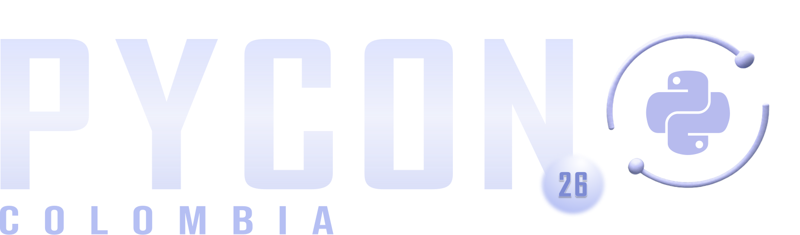

Robin Hafid Quintero Lopez · rohaquinlop
PyCon Colombia 2026
About me
Software Engineer II @ GenLogs · author of complexipy, automathon, robinzhon
PyCon Colombia 2025 · Python Cali 2024 & 2026 · contributor to rust-lang/rust
Let's start with code
def apply_discounts(orders, user):
total = 0
for order in orders:
if order.status == "paid":
for item in order.items:
if item.category == "promo":
if user.is_premium:
total += item.price * 0.8
else:
total += item.price * 0.9
elif item.price > 100:
total += item.price * 0.95
elif order.status == "pending":
total += order.total
return total
Nothing here is clever. Every line is simple. And still…
Since 1976
McCabe's Cyclomatic Complexity: the number of independent paths through the code — every function starts at 1, every branch adds 1.
def parse_config(path):
config = {}
if not path.exists():
return config
for line in path.read_text().splitlines():
if "=" in line:
key, value = line.split("=", 1)
config[key] = value
return config
The problem
get_words — read at a glance
def get_words(count):
match count:
case 1:
return "one"
case 2:
return "a couple"
case 3:
return "a few"
case 4:
return "several"
case _:
return "lots"
sum_of_primes — read very carefully
def sum_of_primes(max):
total = 0
for i in range(1, max + 1):
is_prime = True
for j in range(2, i):
if i % j == 0:
is_prime = False
break
if is_prime:
total += i
return total
2017 · SonarSource
Proposed by G. Ann Campbell: a score for how hard code is to understand — built from programmer intuition, not from a mathematical model.
That's the whole spec. Let's watch it run on real code.
Rule discovery #1
sum_of_primes
def sum_of_primes(max):
total = 0
for i in range(1, max + 1):
is_prime = True
for j in range(2, i):
if i % j == 0:
is_prime = False
break
if is_prime:
total += i
return total
Rule discovery #2
get_words
def get_words(count):
match count:
case 1:
return "one"
case 2:
return "a couple"
case 3:
return "a few"
case 4:
return "several"
case _:
return "lots"
Why nesting?
Linear — one thing at a time
def process(items):
for i in items: # +1
check(i)
for j in items: # +1
if j.valid: # +2
use(j)
if items: # +1
init()
Nested — everything at once
def process(items):
for i in items: # +1
for j in items: # +2
if j.valid: # +3
if j.active: # +4
use(j)
if items: # +1
init()
Rule discovery #3
One sequence of like operators
def ready(a, b, c, d):
# and, and, and → one sequence
return a and b and c and d
Three sequences — and / or / and
def ready(a, b, c, d):
# every and-or switch starts a new one
return a and b or c and d
a and b and c and d
reads fine; it's the and ↔ or switches that make you stop and think.
The philosophy
return, break, continue —
leaving early usually makes code clearer.
with, try / finally —
only except adds a branch (+1 each).
Extracting well-named functions, comprehensions as expression shorthand — readable condensation is free.
A PyCon exclusive, sort of
Appendix A grants exactly three language exceptions. One of them is ours: decorators.
def log_calls(func):
def wrapper(*args): # nesting stays at 0 — decorator exception
if args: # +1, not +2
print("called with args")
return func(*args)
return wrapper # total: 1
log_calls and the exception is gone.
Audience round
def apply_discounts(orders, user):
total = 0
for order in orders:
if order.status == "paid":
for item in order.items:
if item.category == "promo":
if user.is_premium:
total += item.price * 0.8
else:
total += item.price * 0.9
elif item.price > 100:
total += item.price * 0.95
elif order.status == "pending":
total += order.total
return total
We know what to measure — now let's automate it.
Measuring it
Cognitive complexity analysis for Python, implementing the white paper — with a Rust engine that scores thousands of functions in milliseconds.
pip install complexipy
# or
uv add complexipy
Terminal, editor, pre-commit, CI — same number everywhere. Full disclosure: I wrote it. The metric is the point, the tool is a shortcut.
Zero config
$ complexipy talk.py ──────────────── 🐙 complexipy ──────────────── talk.py get_words 1 ✅ PASSED parse_config 4 ✅ PASSED sum_of_primes 8 ✅ PASSED apply_discounts 18 ❌ FAILED ────────── 🎉 Analysis completed! 🎉 ──────────
The numbers next to each function are the same ones we just computed by
hand — and apply_discounts already trips the default threshold of 15.
In CI
$ complexipy . -mx 10 apply_discounts 18 ❌ FAILED $ echo $? 1
# .github/workflows/complexity.yml
- uses: rohaquinlop/complexipy-action@v2
with:
paths: .
max_complexity_allowed: 10
Real codebases
Freeze today's debt. Nothing existing fails.
Compare against a git ref — see what changed, no gate.
Fail only when changed code gets worse. Debt can only shrink.
$ complexipy . --diff main REGRESSED api.py::handle_request 12 → 19 (+7) IMPROVED utils.py::flatten_tree 22 → 14 (−8) NEW auth.py::validate_token 17 (new) Net: 1 regressed, 1 improved, 1 new → exit 1
Refactor 1 / 4
def get_discount(user, cart):
if user is not None: # +1
if user.is_active: # +2
if cart.total > 100: # +3
if user.is_premium: # +4
return 0.2
else: # +1
return 0.1
return 0.0
Refactor 1 / 4
def get_discount(user, cart):
if user is None: # +1
return 0.0
if user.is_active: # +1
if cart.total > 100: # +2
if user.is_premium: # +3
return 0.2
else: # +1
return 0.1
return 0.0
Refactor 1 / 4
def get_discount(user, cart):
if user is None: # +1
return 0.0
if not user.is_active: # +1
return 0.0
if cart.total > 100: # +1
if user.is_premium: # +2
return 0.2
else: # +1
return 0.1
return 0.0
Refactor 1 / 4
def get_discount(user, cart):
if user is None: # +1
return 0.0
if not user.is_active: # +1
return 0.0
if cart.total <= 100: # +1
return 0.0
if user.is_premium: # +1
return 0.2
else: # +1
return 0.1
Refactor 1 / 4
def get_discount(user, cart):
if user is None: # +1
return 0.0
if not user.is_active: # +1
return 0.0
if cart.total <= 100: # +1
return 0.0
return 0.2 if user.is_premium else 0.1 # +1
Refactor 2 / 4
def active_premium_emails(users):
result = []
for u in users: # +1
if u.is_active: # +2
if u.is_premium: # +3
if u.email: # +4
result.append(u.email.lower())
return result
Refactor 2 / 4
def active_premium_emails(users):
result = []
for u in users: # +1
if u.is_active and u.is_premium and u.email: # +2, +1
result.append(u.email.lower())
return result
Refactor 2 / 4
def active_premium_emails(users):
return [
u.email.lower()
for u in users # +1
if u.is_active and u.is_premium and u.email # +1, +1
]
Refactor 3 / 4
def has_expired_item(items):
found = False
for item in items: # +1
if item.status == "active": # +2
if item.days_left < 0: # +3
found = True
break
return found
Refactor 3 / 4
def has_expired_item(items):
found = False
for item in items: # +1
if item.status == "active" and item.days_left < 0: # +2, +1
found = True
break
return found
Refactor 3 / 4
def has_expired_item(items):
return any(
item.days_left < 0
for item in items # +1
if item.status == "active" # +1
)
any() and all() say "does one exist" /
"do they all" directly — no flag, no break, no nesting.
Refactor 4 / 4
def run(command):
parts = command.split()
if parts[0] == "move": # +1
if len(parts) == 3: # +2
return f"move to {parts[1]},{parts[2]}"
elif parts[0] == "rotate": # +1
if len(parts) == 2: # +2
return f"rotate {parts[1]}"
elif parts[0] == "quit": # +1
return "bye"
return "?"
Refactor 4 / 4
def run(command):
match command.split(): # +1
case ["move", x, y]:
return f"move to {x},{y}"
case ["rotate", angle]:
return f"rotate {angle}"
case ["quit"]:
return "bye"
case _:
return "?"
case per shape checks length, position and value
at once — the indexing and the nested guards all vanish.
Remove nesting, not lines — that's what moves the number.
Takeaways
Cyclomatic counts paths, cognitive counts effort. Equal CC can hide wildly different reading costs — measure what you actually care about.
Nesting is the dominant cost. Guard clauses, comprehensions,
any()/all(), extracted functions — flatten first.
Automate the measurement. A threshold in CI turns "this feels unreadable" into a number nobody has to argue about.
Robin Hafid Quintero Lopez · rohaquinlop · PyCon Colombia 2026